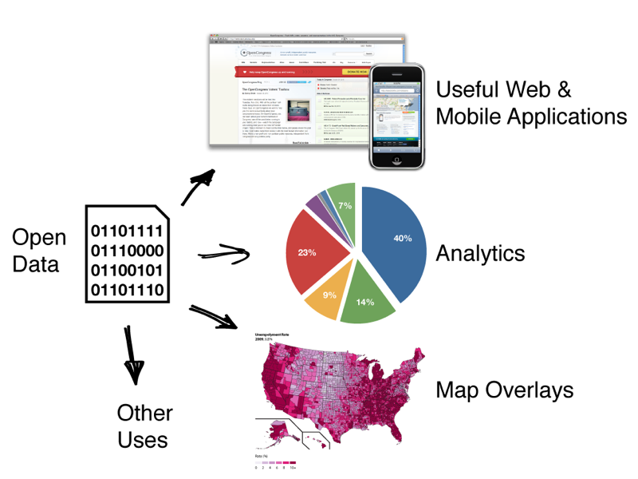

Why Open Data?
- Data helps us make sound decisions.
- Data impacts our communities.
- Data impacts our existing businesses and the creation of new businesses.
- Data impacts our elections.
- Data in an open format allows for more collaboration, participation, and innovation.
- Data belongs to you. Shouldn't you have access to it when you want (need) it?
What is Open Data?
The following attributes were taken from the 8 principles of open data developed in 2007 at the Open Government Working Group along with recent additional suggestions by the Sunlight Foundation.
- Complete
All public data is made available. Public data is data that is not subject to valid privacy, security or privilege limitations.
- Primary
Data is as collected at the source, with the highest possible level of granularity, not in aggregate or modified forms.
- Timely
Data is made available as quickly as necessary to preserve the value of the data.
- Accessible
Data is available to the widest range of users for the widest range of purposes.
- Machine Readable
Data is reasonably structured to allow automated processing.
- Non-discriminatory
Data is available to anyone, with no requirement of registration.
- Non-proprietary
Data is available in a format over which no entity has exclusive control.
- License-free
Data is not subject to any copyright, patent, trademark or trade secret regulation. Reasonable privacy, security and privilege restrictions may be allowed.
- Permanent
Data should be available online in archives in perpetuity.
- Freely Obtainable
Data should be made available without charge to the public.
How can Open Data be used?
Data has the most potential when it is stored in a publicly accessible, machine readable, and non-proprietary data format. Below, we illustrate just a few of the potential uses of open government data. In general, public data linked online can in the words of Sir Tim Berners-Lee, inventor of the world wide web, "increase accountability, contribute valuable information about the world, and to enable government, the country, and the world to function more efficiently". [3]

References:
[1] 8 Principles of Open Government Data, resource.org
[2] Ten Principles for Opening Up Government Information, Sunlight Foundation
[3] Putting Government Data Online, Sir Tim Berners-Lee
Mission
OpenLexington uses technology to promote government transparency, openness, accountability, and accessibility; to empower citizens through data.
We will accomplish this mission through our non-partisan, non-profit efforts within our organization based in Lexington, Kentucky. Our focus on open data, open source software, advocacy, and education is defined below.
OpenLexington is:
- An open source technology group dedicated to building tools and data curation for the benefit of Lexington citizens and our neighbors.
- An advocacy group for an open and transparent government.
- A non-profit and non-partisan organization.
OpenLexington will:
- Build tools and interfaces suitable for curating public data
- Archive and redistribute public data released from the government
- Publish and promote the software we create
- Educate residents on what types of data the government produces and how to access it
- Advocate for the release of machine-readable data from the government
- Pursue our mission through other actions that do not endanger the status of OpenLexington